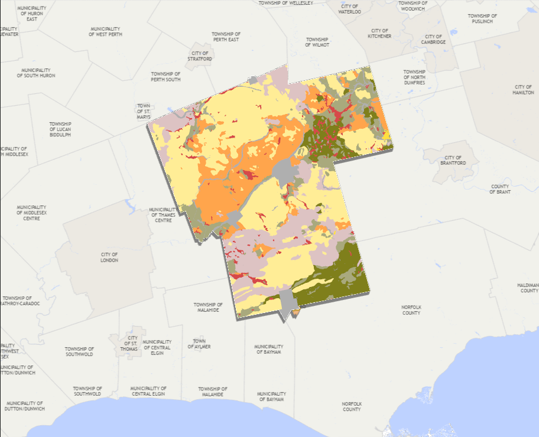

Figure 1. Existing land use conditions in Oxford County.
The map highlights the spatial distribution of agricultural lands,
natural heritage features, settlement areas, and other land use
classifications. Understanding these patterns is essential for
agricultural systems planning, as they influence agricultural land
preservation, growth management, environmental conservation, and
long-term rural economic development. Data were sourced from Ontario's
Geographic Land Information and Mapping Resource (GLIMR).